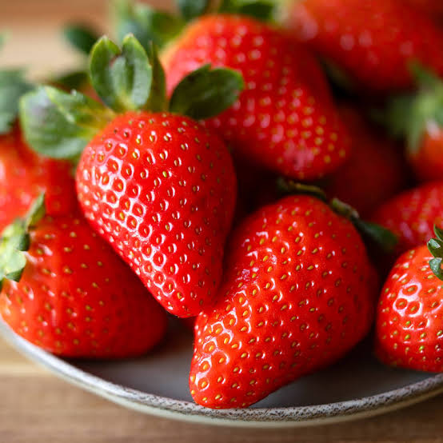

Sabores - Gastronomia y Tradicion
Saberes - Conocimiento Cientifico y Ancestral
Salud - Alimentacion y Bienestar
A diferencia de otras frutas de esta lista, la fresa no es originaria de climas cálidos como el de Córdoba, sino de zonas más frías y altas del país. Sin embargo, su popularidad la ha convertido en una fruta apreciada también en la región, aunque generalmente proveniente de otras zonas productoras de Colombia.
Es una planta herbácea de tallos cortos y hojas trifoliadas. Su fruto, en realidad un receptáculo carnoso, es de color rojo intenso, forma cónica y superficie cubierta de pequeñas semillas, con un sabor dulce y ligeramente ácido muy característico.
La fresa requiere climas frescos, con temperaturas moderadas, por lo que se cultiva principalmente en zonas altas y frías de Colombia, como Boyacá o Cundinamarca, condiciones muy distintas a las del clima cálido tropical de Córdoba.
Aunque no es un cultivo tradicional de la región, la fresa se ha incorporado en la cocina local en preparaciones como jugos, postres, helados y dulces, adaptándose al gusto de las nuevas generaciones.
En Córdoba la fresa no se cultiva de forma extensiva debido a su clima cálido; la fruta que se consume en la región suele provenir de zonas productoras de clima frío ubicadas en otras partes del país.
La fresa es baja en calorías y rica en vitamina C, además de aportar fibra y antioxidantes conocidos como antocianinas, responsables de su característico color rojo.
En las regiones frías donde se cultiva, la fresa puede producir durante gran parte del año gracias a un manejo agrícola tecnificado, permitiendo su disponibilidad casi constante en los mercados.
Aunque no forma parte de la producción agrícola tradicional de Córdoba, la fresa dinamiza el comercio local a través de su venta en mercados y su uso en la preparación de postres y bebidas.
Su alto contenido de vitamina C y antioxidantes contribuye al fortalecimiento del sistema inmunológico y a la protección de las células frente al envejecimiento prematuro.
Aunque ajena al clima cordobés, la fresa se ha integrado a las celebraciones y postres compartidos en la región, siendo un ejemplo de cómo las tradiciones culinarias se enriquecen con productos de otras zonas del país.